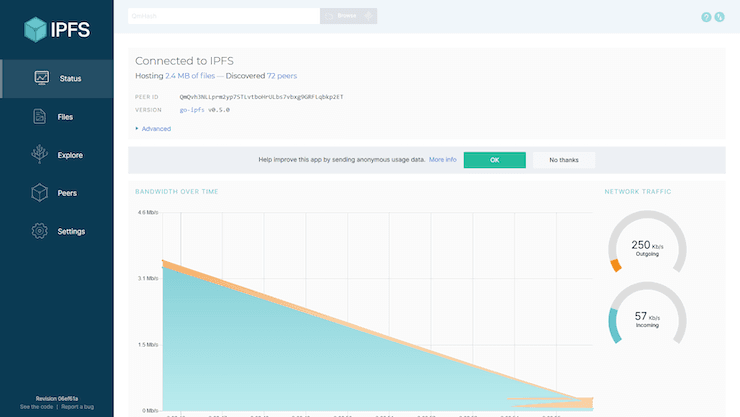

# Command-line quick start
If you're command-line savvy and just want to get up and running with IPFS right away, follow this quick-start guide. Please note that this guide assumes that you'll be installing go-ipfs, the reference implementation written in Go.
TIP
Don’t want to use the command line right now? Give the desktop-app implementation of IPFS a try. It also does all the steps listed on this page automatically, so you can run IPFS from the terminal later whenever you want. Download IPFS Desktop now
# Install IPFS
Installing IPFS is simple, but varies between operating system:
| Windows | macOS | Linux |
|---|---|---|
![Windows icon]() | ![macOS icon]() | ![Linux icon]() |
# Windows
Download
go-ipfs_v0.5.1_windows-386.zipfrom GitHub.cd ~\ wget https://github.com/ipfs/go-ipfs/releases/download/v0.5.1/go-ipfs-v0.5.1_windows-386.zip -Outfile go-ipfs-v0.5.1.zipUnzip the file and move it somewhere handy.
Expand-Archive -Path go-ipfs-v0.5.1.zip -DestinationPath ~\Apps\go-ipfs_v0.5.1Move into the
go-ipfs_v0.5.1folder and check that theipfs.exeworks:cd ~\Apps\go-ipfs_v0.5.1\go-ipfs .\ipfs.exe --version > ipfs version 0.5.0While you can use IPFS right now, it's better to add
ipfs.exeto yourPATH.by using the following steps.Print the current working directory and copy it to your clipboard:
pwd > Path > ---- > C:\Users\Johnny\Apps\go-ipfs_v0.5.1\go-ipfsAdd the address you just copied to PowerShell's
PATHby adding it to the end of theprofile.ps1file stored inDocuments\WindowsPowerShell:Add-Content C:\Users\Johnny\Documents\WindowsPowerShell\profile.ps1 "[System.Environment]::SetEnvironmentVariable('PATH',`$Env:PATH+';;C:\Users\Johnny\Apps\go-ipfs_v0.5.1\go-ipfs')"Close and reopen your PowerShell window. Test that your IPFS path is set correctly by going to your home folder and asking IPFS for the version:
cd ~ ipfs --version > ipfs version 0.5.0
# macOS
Download
go-ipfs_v0.5.1_darwin-386.tar.gzfrom GitHub.wget https://github.com/ipfs/go-ipfs/releases/download/v0.5.1/go-ipfs_v0.5.1_darwin-amd64.tar.gzUnzip the file:
tar -xvzf go-ipfs_v0.5.1_darwin-amd64.tar.gz > x go-ipfs/install.sh > x go-ipfs/ipfs > x go-ipfs/LICENSE > x go-ipfs/LICENSE-APACHE > x go-ipfs/LICENSE-MIT > x go-ipfs/README.mdMove into the
go-ipfsfolder and run the install script:bash install.sh > Moved ./ipfs to /usr/local/binCheck that IPFS install properly:
ipfs --version > ipfs version 0.5.0
# Linux
Download
go-ipfs_v0.5.1_linux-amd64.tar.gzfrom GitHub:wget https://github.com/ipfs/go-ipfs/releases/download/v0.5.1/go-ipfs_v0.5.1_linux-amd64.tar.gzUnzip the file:
tar -xvzf go-ipfs_v0.5.1_linux-amd64.tar.gz > x go-ipfs/install.sh > x go-ipfs/ipfs > x go-ipfs/LICENSE > x go-ipfs/LICENSE-APACHE > x go-ipfs/LICENSE-MIT > x go-ipfs/README.mdMove into the
go-ipfsfolder and run the install script:cd go-ipfs sudo bash install.sh > Moved ./ipfs to /usr/local/binTest that IPFS has installed correctly:
ipfs --version > ipfs version 0.5.0
# Initialize the repository
ipfs stores all its settings and internal data in a directory called the repository. Before using IPFS for the first time, you’ll need to initialize the repository with the ipfs init command:
ipfs init
> initializing ipfs node at /Users/jbenet/.go-ipfs
> generating 2048-bit RSA keypair...done
> peer identity: Qmcpo2iLBikrdf1d6QU6vXuNb6P7hwrbNPW9kLAH8eG67z
> to get started, enter:
>
> ipfs cat /ipfs/QmYwAPJzv5CZsnA625s3Xf2nemtYgPpHdWEz79ojWnPbdG/readme
If you are running on a server in a data center, you should initialize IPFS with the server profile. Doing so will prevent IPFS from creating a lot of data center-internal traffic trying to discover local nodes:
ipfs init --profile server
There are a whole host of other configuration options you may want to set — check the full reference for more.
The hash after peer identity: is your node’s ID and will be different from the one shown in the above output. Other nodes on the network use it to find and connect to you. You can run ipfs id at any time to get it again if you need it.
Now, try running the command suggested to you in the output of ipfs init. The one that looks like ipfs cat /ipfs/<HASH>/readme.
You should see something like this:
Hello and Welcome to IPFS!
██╗██████╗ ███████╗███████╗
██║██╔══██╗██╔════╝██╔════╝
██║██████╔╝█████╗ ███████╗
██║██╔═══╝ ██╔══╝ ╚════██║
██║██║ ██║ ███████║
╚═╝╚═╝ ╚═╝ ╚══════╝
If you see this, you have successfully installed
IPFS and are now interfacing with the ipfs merkledag!
-------------------------------------------------------
| Warning: |
| This is alpha software. use at your own discretion! |
| Much is missing or lacking polish. There are bugs. |
| Not yet secure. Read the security notes for more. |
-------------------------------------------------------
Check out some of the other files in this directory:
./about
./help
./quick-start <-- usage examples
./readme <-- this file
./security-notes
You can explore other objects in the repository. In particular, the quick-start directory which shows example commands to try:
ipfs cat /ipfs/QmYwAPJzv5CZsnA625s3Xf2nemtYgPpHdWEz79ojWnPbdG/quick-start
# Take your node online
Once you're ready to join your node to the public network, run the ipfs daemon in another terminal and wait for all three lines below to appear to know that your node is ready:
ipfs daemon
> Initializing daemon...
> API server listening on /ip4/127.0.0.1/tcp/5001
> Gateway server listening on /ip4/127.0.0.1/tcp/8080
Make a note of the TCP ports you receive. If they are different, use yours in the commands below.
Now, switch back to your original terminal. If you’re connected to the network, you should be able to see the ipfs addresses of your peers when you run:
ipfs swarm peers
> /ip4/104.131.131.82/tcp/4001/p2p/QmaCpDMGvV2BGHeYERUEnRQAwe3N8SzbUtfsmvsqQLuvuJ
> /ip4/104.236.151.122/tcp/4001/p2p/QmSoLju6m7xTh3DuokvT3886QRYqxAzb1kShaanJgW36yx
> /ip4/134.121.64.93/tcp/1035/p2p/QmWHyrPWQnsz1wxHR219ooJDYTvxJPyZuDUPSDpdsAovN5
> /ip4/178.62.8.190/tcp/4002/p2p/QmdXzZ25cyzSF99csCQmmPZ1NTbWTe8qtKFaZKpZQPdTFB
These are a combination of <transport address>/p2p/<hash-of-public-key>.
Now, you should be able to get objects from the network. Try:
ipfs cat /ipfs/QmW2WQi7j6c7UgJTarActp7tDNikE4B2qXtFCfLPdsgaTQ/cat.jpg > cat.jpg
open cat.jpg
Next, try sending objects to the network, and then viewing it in your favorite browser. The example below uses curl as the browser, but you can open the IPFS URL in other browsers as well:
hash=`echo "I <3 IPFS -$(whoami)" | ipfs add -q`
curl "https://ipfs.io/ipfs/$hash"
> I <3 IPFS -<your username>
Cool, huh? The gateway served a file from your computer. The gateway queried the Distributed hash table (DHT), found your machine, requested the file, your computer sent it to the gateway, and the gateway sent it to your browser.
Depending on the state of the network, curl may take a while. The public gateways may be overloaded or having a hard time reaching you.
You can also check it out at your own local gateway:
curl "http://127.0.0.1:8080/ipfs/$hash"
> I <3 IPFS -<your username>
By default, your gateway is not exposed to the world. It only works locally.
# Web console
You can view the web console on your local node by going to localhost:5001/webui. This should bring up a console like this:

# IPFS Companion
While we are at it, IPFS Companion is a browser extension that simplifies access to IPFS resources and adds support for the IPFS protocol.
It will automatically redirect IPFS gateway requests to your local daemon so that you are not relying on or trusting, remote gateways.
It runs in Firefox (desktop and Android) and various Chromium-based browsers such as Google Chrome or Brave.
Check out its features and install it today!
# Troubleshooting
# Check your Go version
IPFS works with Go 1.12.0 or later. To check what go version you have installed, type go version:
go version
> go version go1.12.2 linux/amd64
If you need to update, we recommend you install from the canonical Go packages. Package managers often contain out-of-date Go packages.
# Check that FUSE is installed
You need to install and set up FUSE in order to mount the file system. For more details on setting up FUSE, see github.com/ipfs/go-ipfs/blob/master/docs/fuse.md
# Further help
The IPFS community is friendly and able to help! Get support from other IPFS developers in the official IPFS forums, or join the conversation on IRC.